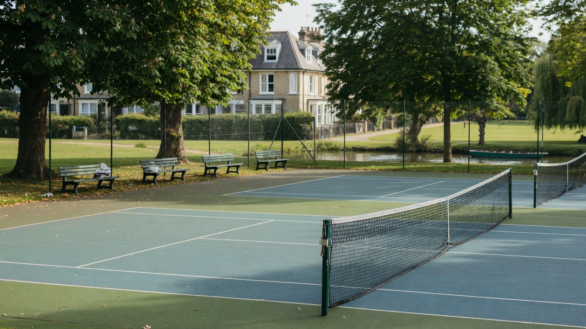

Four makes a match
Doubles is the sweet spot. If you can come, say so the night before so nobody walks to an empty court.

Cambridge · learners welcome
A small, informal group of adult learners who book public courts, share balls, and keep Saturday mornings moving. No club fees. Bring a racket if you can.
This site is public and anonymous. First names, phone numbers, home addresses, door codes, and children’s names from group chats are not published. Coordinate privately.
Doubles is the sweet spot. If you can come, say so the night before so nobody walks to an empty court.
Jesus Green is the default city option (book and pay). When it is full, the group has found excellent shade at St Ives outdoor courts.
Rackets are required. Practice balls run out. Whoever has a fresh can, bring it. Tea and a picnic after a session is a feature, not a bug.
Weekday floaters (often 15:00–17:00) keep the rally going when weekends clash. September onwards, scoring practice returns.